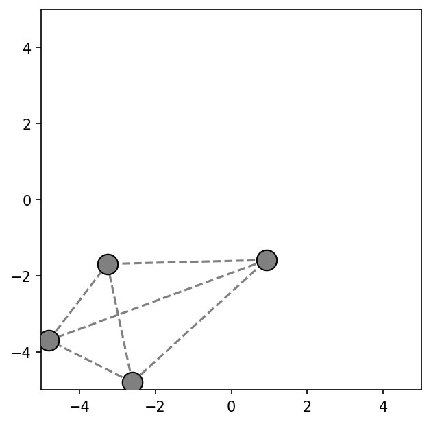
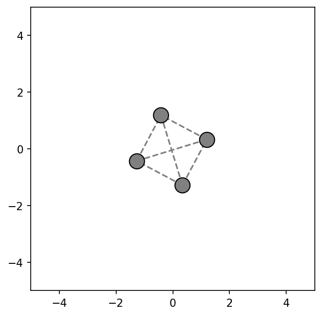
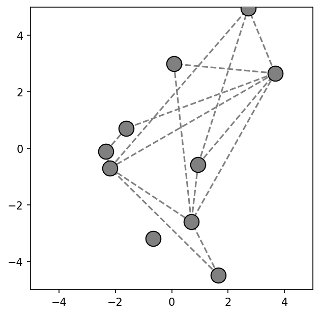
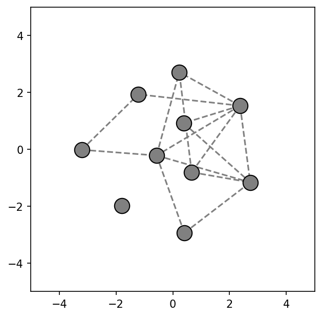

Graph Force Layout
Force-directed graph layout from a list of node connections.
Overview
The script takes a list of node connections and produces a force-directed layout of the corresponding graph. Nodes are placed at random initial positions and moved at each time step by the net force acting on them, settling over time into a spread-out, readable configuration.
Forces
Three forces act on each node at every step.
A centering force pulls every node weakly toward the origin, preventing the graph from drifting off-screen. A repulsion pushes every pair of nodes apart with magnitude proportional to $1/d^2$, so nearby nodes repel strongly regardless of whether they are connected. A spring force acts only along edges: connected nodes attract each other when their separation exceeds a target length $\ell$ and repel when it falls short, pulling linked pairs toward a consistent spacing.
At each step, velocity is updated with a damping factor of $0.9$ so the system can settle rather than oscillate indefinitely.
Results
The figures below show the initial and settled layouts for a 4-node and a 10-node graph. In both cases the nodes start in an uneven layout; the forces settle them into a more readable arrangement centered on the origin.




Implementation
The full script is on the linked GitHub. Below is the force calculation and the per-frame update loop.
def calc_force(self, other):
force_x, force_y = 0.0, 0.0
epsilon = 1e-5
# centering
force_x += (centerx - self.x) * center_force
force_y += (centery - self.y) * center_force
if self.index == other.index:
return force_x, force_y
dx = self.x - other.x
dy = self.y - other.y
distance = np.hypot(dx, dy) + epsilon
# repulsion
repel_magnitude = repel_force / (distance ** 2)
force_x += (dx / distance) * repel_magnitude
force_y += (dy / distance) * repel_magnitude
# spring attraction along edges
is_connected = (
[self.index, other.index] in connections or
[other.index, self.index] in connections
)
if is_connected:
displacement = distance - link_length
spring_magnitude = link_force * displacement
force_x -= dx * spring_magnitude
force_y -= dy * spring_magnitude
return [force_x, force_y]
def update(frame):
for node in nodes:
fx, fy = 0.0, 0.0
for other in nodes:
dfx, dfy = node.calc_force(other)
fx += dfx
fy += dfy
node.move([fx, fy])